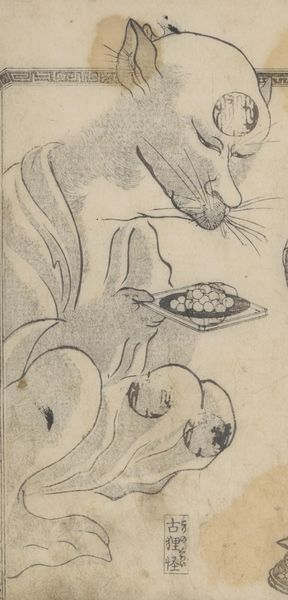

古狸の怪。着物を着て、団子を盛った盆を両手で持っている。額と膝に印鑑が押されている。
著作者：葛飾隠士吉滿・蹄齋北馬／出典：親書誌：U426_nichibunken_0445：尼城錦／日付：2017／資源識別子：U426_nichibunken_0445_0006_0000
Copyright (c)2010- International Research Center for Japanese Studies, Kyoto, Japan. All rights reserved.